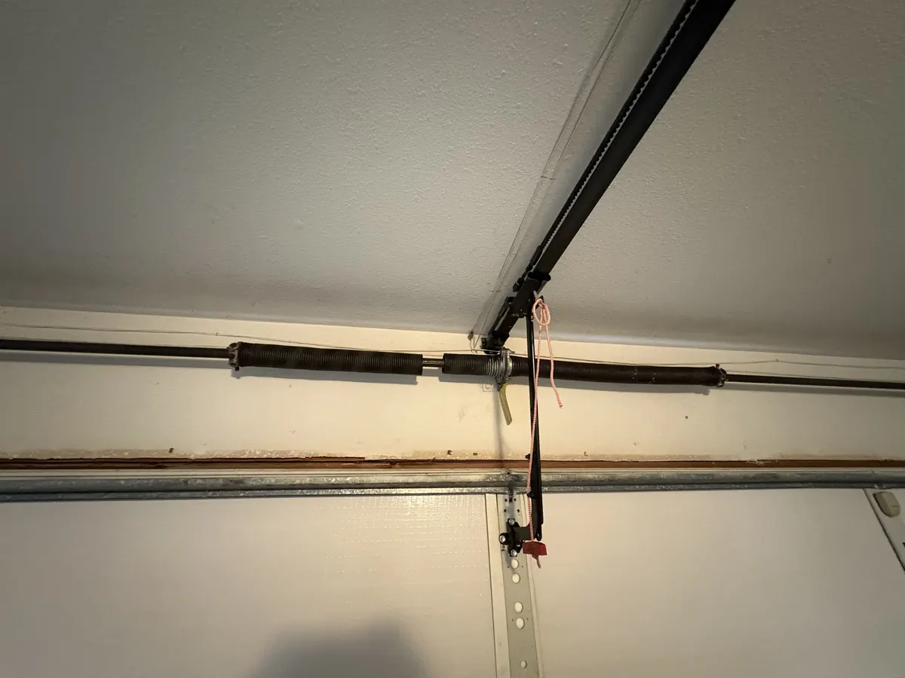
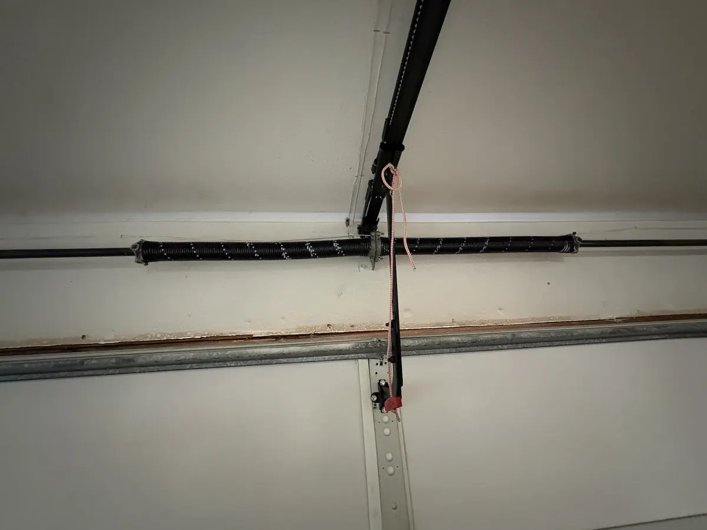

Broken Spring Repair in Austin, TX
A broken spring is one of the most common, and most dangerous, garage door problems. Our technicians replace torsion and extension springs safely, with same-day appointments available.
If your garage door won't budge, sounds like a loud bang came from the garage, or the door feels unusually heavy when lifted manually, you likely have a broken spring. Garage door springs carry tremendous tension and should never be repaired or replaced without proper training and tools.
Let's Roll Garage Doors provides expert broken spring repair in Austin, TX, replacing both torsion springs (mounted above the door) and extension springs (mounted along the upper tracks) with high-cycle-rated replacements built to last 7-10 years under normal use.
What's Included
Torsion Spring Replacement
Safe removal and replacement of torsion springs using proper winding bars and clamps.
Extension Spring Replacement
Replacing stretched or snapped extension springs and their safety cables.
Spring Tension Adjustment
Fine-tuning spring tension so your door opens and closes evenly without sticking.
Cable & Pulley Inspection
Checking the surrounding hardware that's often stressed when a spring fails.
Safety Cable Installation
Adding containment cables on extension spring systems to prevent injury if a spring fails.
High-Cycle Spring Upgrade
Optional upgrade to 25,000-50,000 cycle springs for heavier-use doors.
Our Process
Describe the Problem
Tell us what you're seeing, a loud bang, a door that won't lift, or visible gaps in the spring coil.
Same-Day Spring Replacement
In most cases we carry standard spring sizes on the truck and can replace it during the first visit.
Proper Sizing & Balance
We measure your door's weight and size the new spring(s) correctly, improperly sized springs cause premature failure and opener strain.
Full Safety Test
We test the door's balance and run a complete safety check before we leave.
Why Austin Homeowners Choose Let's Roll
Trained Spring Technicians
Spring replacement is one of the most dangerous DIY garage door repairs, our techs are trained and equipped to do it safely.
7-10 Year Spring Lifespan
We install quality springs rated for 10,000+ cycles, giving you years of reliable use.
Fair, Flat-Rate Pricing
Spring replacement pricing is quoted upfront with no surprises.
Fast Response
Most broken-spring calls are scheduled same-day since a broken spring can leave your garage inoperable.
Torsion vs Extension Springs: Which Does Your Door Have?
Look at the top of your garage door. If a long, coiled spring sits on a metal bar above the door, it is a torsion spring. If you see springs running along the side tracks, with a cable and pulley at the end, those are extension springs.
Torsion springs are on most newer Austin homes. They twist to lift the door, wear evenly and are rated for 10,000 cycles as standard. Extension springs stretch and contract, are common on older and lighter doors, and need safety cables so a snapped spring can't whip across the garage.
Torsion systems usually cost a little more to replace, but they are smoother and last longer. We replace both types, and we'll tell you which one you have before any work starts.
Signs Your Garage Door Spring Is Broken
- A loud bang from the garage, like a gunshot, when the spring snapped
- The opener hums but the door won't lift, or only rises a few inches
- The door feels extremely heavy when you try to lift it by hand
- A visible gap in the coil above the door
- The door slams down, or drops unevenly on one side
Not sure yet? Read our guide to the broken spring warning signs. If your door shows any of the signs above, stop using it and call us.
What Affects Spring Replacement Cost in Austin
Our pricing starts at $249 for a single torsion spring and $399 for a two-spring replacement, and your final price is confirmed before we start. Four things move it up or down:
- Door size and weight. A heavy insulated double door needs stronger, longer springs than a light single-car door.
- Torsion or extension. The two types use different parts and take different amounts of labor.
- Cycle rating. Standard springs are rated for about 10,000 cycles. Upgrading to high-cycle springs rated for 25,000 to 50,000 cycles costs more up front and lasts years longer on a door that is used a lot.
- One spring or both. If one spring breaks, the second is usually close behind. Replacing both together is cheaper than two visits.
- Emergency or after-hours calls. Service outside normal hours can cost more.
For the full picture, see our garage door repair cost guide.
Recent Spring Replacement in Easton Park, Austin
Here is a spring replacement we completed in the Easton Park neighborhood of Austin. The old springs are on the left and the new springs are on the right.


Our Spring Replacement Warranty
Every spring replacement is covered by our workmanship guarantee, which runs 45 to 60 days from the date of service unless your invoice says otherwise. If something we did isn't right, call us and we will come back and fix it.
The springs themselves carry a parts warranty of 3 to 5 years, depending on the spring type and cycle rating you choose. Higher-cycle springs carry the longer term. The full terms, including what is and isn't covered, are on our warranty terms page.
Spring Repair Across Austin
We repair and replace garage door springs across Austin and the surrounding area. Our technicians are dispatched from our Austin location at 720 Airport Blvd #1280, and our emergency line is open 24/7. Nearby we offer garage door spring repair in South Austin, garage door spring repair in North Austin, garage door spring repair in East Austin, garage door spring repair in West Austin, garage door spring repair in Round Rock, garage door spring repair in Cedar Park, garage door spring repair in Pflugerville, garage door spring repair in Georgetown, garage door spring repair in Leander, garage door spring repair in Lakeway, garage door spring repair in Kyle, garage door spring repair in Buda, garage door spring repair in Hutto, garage door spring repair in Manor, and garage door spring repair in Bastrop. Call (512) 947-4451 to check same-day availability for your address.
Frequently Asked Questions
How much does it cost to replace a garage door spring in Austin?
Single torsion spring replacement starts at $249, and a full two-spring replacement starts at $399. Extension spring systems are generally less expensive. Exact pricing depends on your door's size and weight.
How long do garage door springs last?
Most springs are rated for 7-10 years or roughly 10,000 cycles (one cycle = one full open/close). Heavy daily use can shorten that lifespan.
Is it safe to use my garage door if a spring is broken?
No. Once a spring breaks, the opener has to lift the full weight of the door alone, which can quickly damage the opener motor and create a safety hazard. Avoid using the door until it's repaired.
Can I replace a garage door spring myself?
We strongly recommend against it. Springs are under extreme tension and have caused serious injuries when handled without the right tools and training. It's one of the few garage door repairs best left entirely to a professional.
How do I know if my garage door spring is broken?
Four telltale signs: (1) you heard a loud bang from the garage - a snapping torsion spring sounds like a gunshot; (2) there's a visible gap of about 2 inches in the spring coil above the door; (3) the door feels extremely heavy when you try to lift it by hand; (4) the opener strains, lifts the door a few inches, then stops or reverses. Any one of these means stop using the door and call for a same-day replacement.
If one spring broke, should I replace both garage door springs?
On a two-spring door, yes. Both springs were installed at the same time and have the same cycle count, so when one breaks the other is usually near the end of its life too. Replacing both at once (starting at $399 total) costs far less than two separate service calls, keeps the door balanced, and avoids a second breakdown weeks later. We'll always tell you honestly if your second spring still has real life left.
Why did my garage door spring break?
Springs wear out. Each open and close is one cycle, and a standard spring is rated for about 10,000 cycles, which is roughly 7 to 10 years of normal use. Heavy daily use, rust, and a door that is out of balance all shorten that. Austin heat also dries out lubricant, so a yearly tune-up helps.
Torsion or extension spring: how do I tell?
Look above the door. A coiled spring on a bar mounted over the door opening is a torsion spring. Springs that run along the horizontal side tracks, with cables and pulleys at the ends, are extension springs. If you aren't sure, send us a photo or call (512) 947-4451 and we'll tell you.
Do you replace springs after hours in Austin?
Yes. Our emergency line is answered 24/7, and we replace broken springs after hours, on weekends and on holidays when we can get to you safely. Call (512) 947-4451. After-hours service can cost more than a regular daytime visit.
Ready to Get Started?
Call now for a free, no-obligation estimate, same-day appointments available across Austin.
Call (512) 947-4451